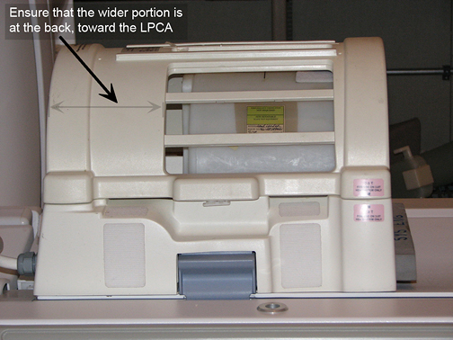

| NOTE: | Failure to correctly position the Head Coil will result in SPT failures due to the inability to use full travel distance. If phantom positioning is an issue, it will be flagged during the “Phantom Check” at the beginning of the SPT scan. |
Illustration 7: Head Coil in Superior Location
